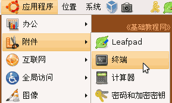

电脑操作基础
作者：TeliuTe 来源：基础教程网
十四、sudo和管理员 返回目录 下一课Ubuntu中文件权限很严格，很多操作必须要用管理员来进行，普通用户无法操作，下面我们来看一个练习；
1、使用sudo命令
1）sudo用在终端命令行开头，表示以管理员用户运行命令，
点菜单“应用程序－附件－终端”，开启一个终端窗口；

2）输入修改源的命令： sudo gedit /etc/apt/sources.list
这条命令开头使用了sudo，表示用管理员身份运行gedit文本编辑器程序，打开源列表文件sources.list；
3）按回车键，出来输入密码提示，输入自己的密码，然后按回车键，
注意密码不显示出来，盲打输完按一下回车键；
4）然后就会出来一个文本编辑器的窗口，看一下然后关闭，回到终端窗口；
输入一次密码后，短时间内再次运行sudo不用输入密码；
2、管理文件
1）如果想使用管理员身份，来管理文件，比如删除和复制到系统文件夹里的文件；
2）在“附件”菜单里，打开一个终端窗口，输入命令： sudo nautilus
小技巧：输后面单词时，输入nau 然后按一下Tab键，会自动补全后面的命令；
3）然后出来一个文件浏览器窗口，标题上显示的就是管理员用户 root
4）看一看，然后关闭这个文件管理器窗口，返回到终端窗口里，
注意，管理员用户权限最高，因此操作一定要细心；
本节学习了在Ubuntu中有关sudo和管理员身份的基本操作，如果你成功地完成了练习，请继续学习下一课内容；本教程由86团学校TeliuTe制作|著作权所有
基础教程网：http://teliute.org/
美丽的校园……
转载和引用本站内容，请保留版权信息和本站链接。